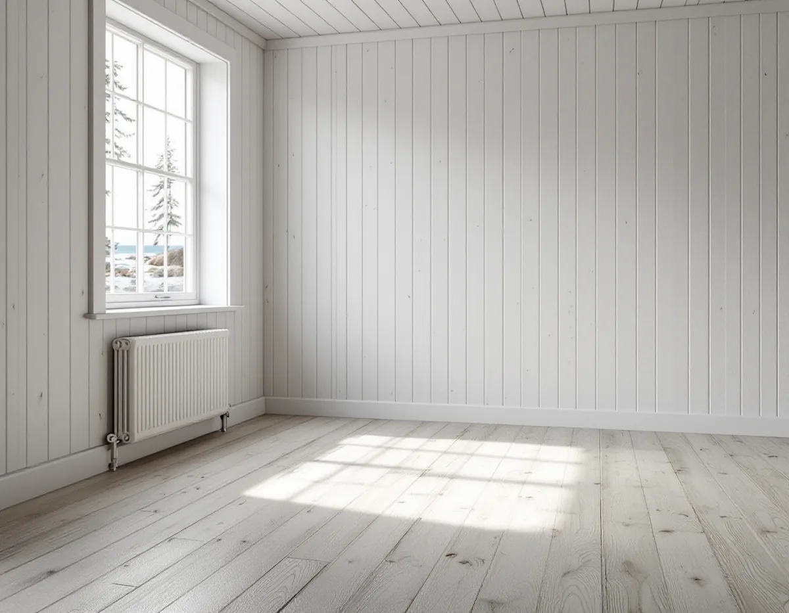
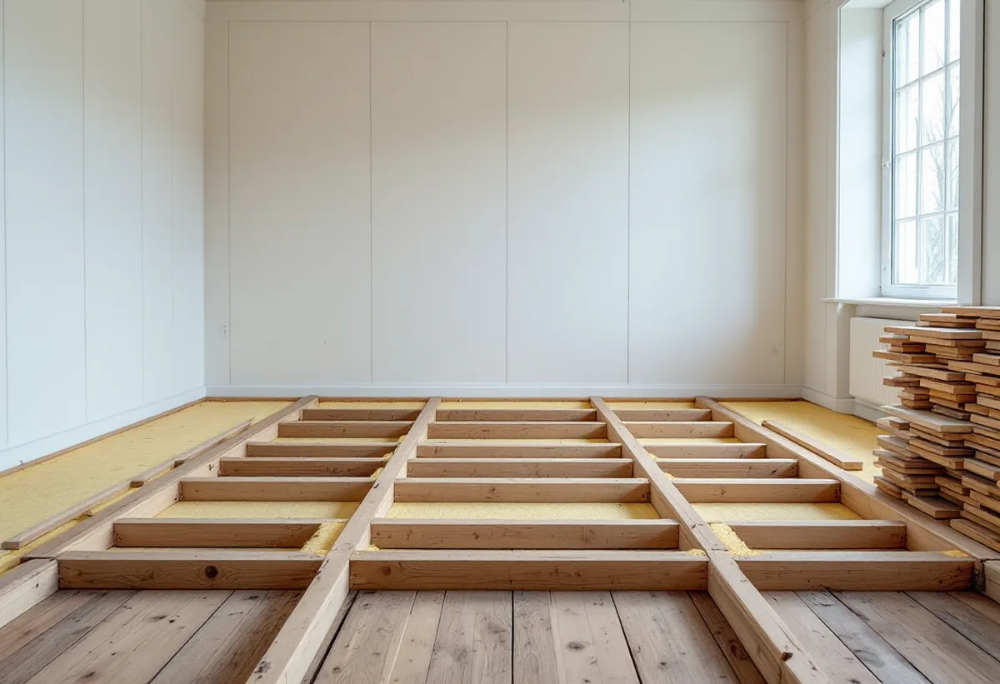

Platsbesök
Vi tittar på golv och bjälklag, mäter höjder och går igenom planer på uppvärmning och VA.
På Värmdö väljer allt fler att bo året om i hus som byggdes för sommaren. Det är ofta golvet som först avslöjar att huset inte var tänkt för vintern. Geal Entreprenad AB lägger nya golv, slipar gamla och rättar till underlaget på hela Värmdö, med gratis platsbesök och skriftligt kostnadsförslag.

Värmdö kommuns broschyr Fritidshusområde i förändring beskriver hur fler och fler väljer att bosätta sig permanent i kommunens fritidshusområden. Många av dem ska planläggas och få kommunalt vatten och avlopp, och det handlar om tusentals fastigheter. De områden som först ska anpassas kallas prioriterade förändringsområden och pekas ut i översiktsplanen Värmdö 2035.
Planprocessen pågår enligt kommunen normalt i två till tre år. Först när detaljplanen har fått laga kraft och vatten och avlopp är utbyggt kan man söka bygglov enligt den nya planen. För golvet spelar det mindre roll, eftersom invändiga golvarbeten inte kräver lov. Men den som planerar en större ombyggnad gör klokt i att samordna golvet med det som kommer senare, så att inget behöver rivas upp igen.

Ett golv i ett hus som användes några månader om året behövde inte hålla värmen i januari. Bjälklaget kan vara sparsamt isolerat, och golvbrädorna ligger ibland direkt på bjälkarna utan något mellanskikt. När huset värms upp hela vintern blir golven kalla och glipor öppnar sig mellan brädorna när luften blir torr.
Ett nytt golv ovanpå löser sällan kylan på egen hand. Vid platsbesöket tittar vi på hur bjälklaget är byggt och om det går att komma åt underifrån. Ibland är det rimligt att ta upp golvet, se över isoleringen och sedan lägga tillbaka brädorna eller ett nytt golv. Då blir det också möjligt att dra nya rör eller kablar innan golvet stängs. Gamla brädor som tas upp märks och läggs åt sidan, så att de kan läggas tillbaka i samma ordning om de är i gott skick.
Kommunens riktlinjer för förändringsområdena säger att det inom varje fastighet ska finnas plats för bland annat parkering, ett eventuellt attefallshus och bergvärme. För många som går från sommarhus till helårshus blir uppvärmningen en av de större frågorna.
Byter du till ett vattenburet system är det värt att fundera på golvvärme i samma veva, särskilt om golven ändå ska tas upp. Vattenburen golvvärme kräver mer bygghöjd än en elmatta, och golvet ovanpå ska vara avsett för golvvärme enligt tillverkarens anvisningar. Vi planerar underlag och golv tillsammans med den som installerar värmesystemet, så att höjder och trösklar stämmer.
En antikvarisk konsekvensanalys från 2023 sammanfattar riksintresset Gustavsberg som ett brukssamhälle med industriell verksamhet från tidigt 1800-tal till 1970-talet, präglat av 1800-talets patriarkaliska industrisamhälle och 1900-talets moderna bruks- och mönstersamhälle. De tidigaste bruksgatorna från det sena 1800-talet ligger närmast Farstaviken, och längre ut finns bostäder från 1900-talet, ofta inbäddade i grönska.
I äldre trähus kan breda brädgolv finnas kvar under senare mattor. Har de legat dolda länge är de ofta i bättre skick än man tror. Vi tar upp en bit vid en tröskel, bedömer brädorna och föreslår att slipa och laga om det är rimligt, hellre än att riva. Mer om slipning finns på sidan om golvläggning.
Ett golvjobb på en ö utan bro kräver att material, verktyg och avfall planeras in i förväg, eftersom allt ska fraktas fram och tillbaka. Golvmaterial behöver dessutom ofta ligga inne i huset en tid innan läggning, så att det hinner anpassa sig till rummets klimat. Det gör att leveransen behöver komma i god tid.
Vi går igenom transporter och tidplan vid platsbesöket och skriver in dem i kostnadsförslaget, så att du vet vad som ingår innan arbetet börjar.
Vi tittar på golv och bjälklag, mäter höjder och går igenom planer på uppvärmning och VA.
Du får ett skriftligt kostnadsförslag med underlag, golv och transporter på egna rader.
Vi bestämmer ordningen med eventuell rörläggare, elektriker eller värmeinstallatör.
Gamla golv tas bort, bjälklaget ses över och underlaget riktas.
Nytt golv läggs eller gamla brädor slipas och behandlas.
Vi tar med oss avfallet, går igenom golvet och lämnar skötselråd.
Rotavdraget gäller både permanentbostad och fritidshus som du äger och använder. Att lägga nytt golv eller slipa ett gammalt räknas som rotarbete, och avdraget är 30 procent av arbetskostnaden, högst 50 000 kr per person och år och högst 75 000 kr tillsammans med rutavdrag.
Golvmaterial och resor ger inget avdrag. Geal drar avdraget direkt på fakturan.
Bjälklagets skick, om golvet behöver tas upp för isolering eller nya ledningar och hur materialet ska fraktas till huset påverkar mest. Golvvärme och samordning med andra hantverkare tillkommer om de ingår. Platsbesöket är gratis och du får ett skriftligt kostnadsförslag.
Parkett, trägolv, klinker och slipning.
Golvläggning i Stockholm →Takbyte, takbesiktning och plåtarbeten.
Takläggare på Värmdö →Skärgård, vind och fritidshus.
Takrenovering på Värmdö →Fritidsområden, kulturmiljö och avlopp.
Attefallshus på Värmdö →Brunnsvatten, salt och eget avlopp.
Badrumsrenovering på Värmdö →Byggrätt, PFO-områden och strandskydd.
Byggföretag på Värmdö →Röd panel, vita snickerier och båthus i skärgårdsbyarna.
Fasadmålning på Värmdö →Sommarvillor, skyddade hus och helårsboende.
Fasadrenovering på Värmdö →Gustavsbergs bevarandevärda fönster.
Fönsterbyte på Värmdö →Glasverandor och äldre fönster.
Fönsterrenovering på Värmdö →Gamla brädgolv och skonsam slipning.
Golvslipning på Värmdö →Fritidshus, eget avlopp och Gustavsberg.
Köksrenovering på Värmdö →Skärgårdshus, fritidshus och bruksmiljö på Värmdö.
Målare på Värmdö →Plåttak och beslag på Värmdö.
Plåtslagare på Värmdö →Fritidshus som blir helårshus.
Snickare på Värmdö →Anmälan, kulturmiljö och tak i skärgårdsbyarna.
Takbyte på Värmdö →Riva eller spara tapetlagren.
Tapetsering på Värmdö →Fritidshusplaner och lovfria 30 m².
Tillbyggnad på Värmdö →VVS, varmvattnet och byggreglerna.
Totalrenovering på Värmdö →